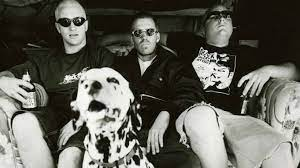
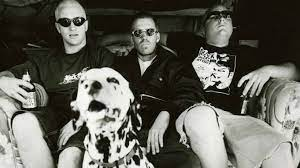

Sublime an alt, ska, punk, rock band origanally formed in 1988.
The band origanally consisting of Bradley Nowell (vocals and guitar),
Eric Wilson(bass), and Bud Gaugh(drums). Which had lasted untill the
bands brake up in 1996 do to the unexpected death of Bradley Nowell
shortly after finishing recording there third and best selling album.
After about a 13 year the surviving members of the band along with there
new lead signer Rome Ramirez tried to reform the band, but do to legal
desputes with the name of the band they were unable to perform under the
name Sublime. Leading the band to change the name to
Sublime with Rome. Going on to release Three more albums
and four more singles.